Basics of Full-Waveform Inversion
Motivation, Theory, and Challenges
Schools of EAS, CSE, ECE — Georgia Institute of Technology
2026-03-30


Basics of Full-Waveform Inversion
Felix J. Herrmann
School of Earth and Ocean Sciences — Georgia Institute of Technology
Based on Virieux and Operto (2009), Virieux et al. (2017), Jones (2019)
Outline
- Motivation — Why do we need FWI?
- Two types of wave interactions — Forward vs. backward scattering
- Single scattering formulation — The physics of FWI
- Fresnel zones and resolution — What can FWI resolve?
- Optimization — Gradient descent to quasi-Newton
- Cycle skipping — The fundamental challenge
- Topology of gradients — Banana-doughnut vs. rabbit ears
- FWI in practice with Devito — Tutorials 01–03
- SLIM contributions & conclusions
Why FWI?
The velocity model problem:
Migration can only construct reliable images of the subsurface if we have an accurate representation of the parameter variation within the Earth. (Jones 2019)
Consequently, much effort has gone into developing model-building tools to estimate these parameters — the most important of which is velocity.
Migration imaging artefacts
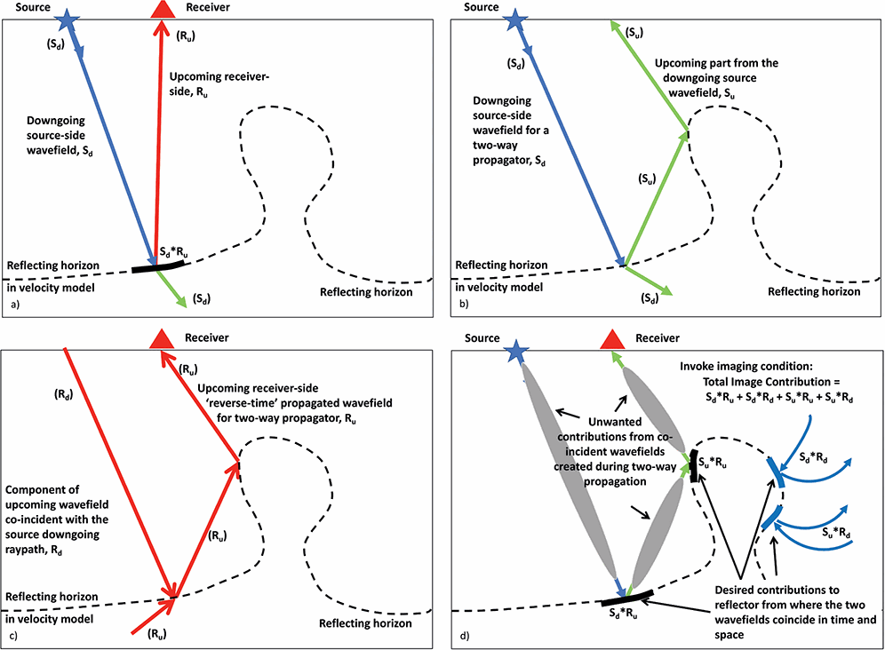
The migration imaging condition. (a) Simple reflection from a flat event. (b) Downgoing source-side wavefield for two-way propagation. (c) Upcoming receiver-side wavefield. (d) Imaging condition forms the final image plus cross-talk terms. Adapted from Jones (2019).
Cross-talk in RTM imaging
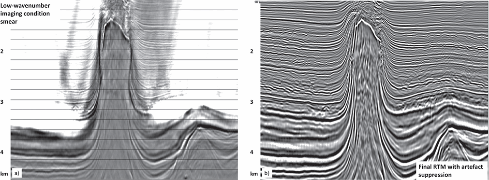
Shallow section from the RTM image: (a) prior to filtering the backscattered noise; (b) after filtering of RTM angle gathers. From Jones (2019).
The low-frequency background “image condition” noise is visible above the critical angle — these are the rabbit-ear components of the FWI gradient.
What is FWI?
Definition
Full waveform inversion (FWI) is a high-resolution seismic imaging technique that is based on using the entire content of seismic traces for extracting physical parameters of the medium sampled by seismic waves. (Virieux et al. 2017)
FWI provides the highest resolution of indirect osculating physical methods, compared with results from gravimetry, geomagnetism, or electromagnetism.
Two types of wave interactions
Smooth (transmission)
- Wave directions are slightly deviated by variations of medium properties
- Small variations in the wavefront
- Waves continue to propagate forward after interaction
- Forward scattering → transmission regime
Rough (reflection)
- Wave directions are significantly modified by medium properties
- Backward scattering → reflection regime
- Reflection waves have a completely different direction compared to incident wave
These two probing interactions have led to two strategies for imaging the medium: tomographic approaches and migration methods. (Virieux et al. 2017)
Wavenumber coverage
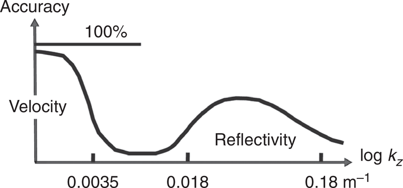
Extraction percentage of vertical model variation when considering the vertical component \(k_z\) of the wavenumber vector. Tomographic tools reconstruct the smooth part of the velocity structure, whereas migration tools reconstruct the contrasted part. There is an apparent insensitivity at intermediate values of wavenumbers. After Figure 1.4-3 of Claerbout (1985). From Virieux et al. (2017).
Hierarchies of wave interactions
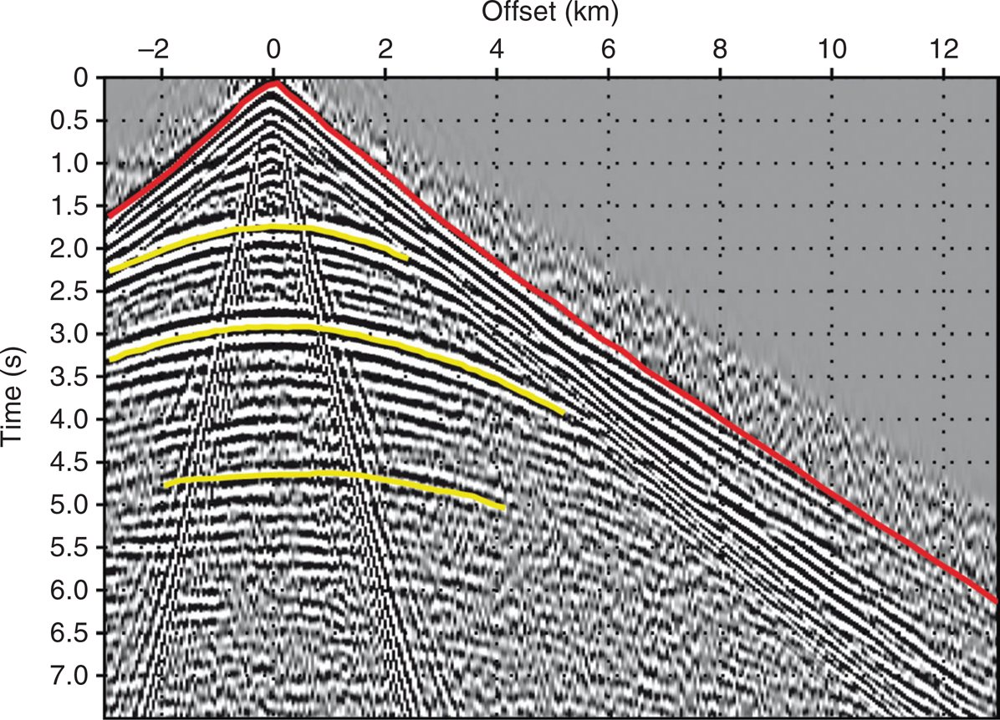
Common shot gather with different organized hierarchies in the time recording. Yellow phases express the reflection regime with time delays, whereas undulations visible on direct waves (red curves) and on hyperbolic branches of reflected phases (yellow curves) identify the transmission regime. From Virieux et al. (2017).
Diving waves and subsurface illumination
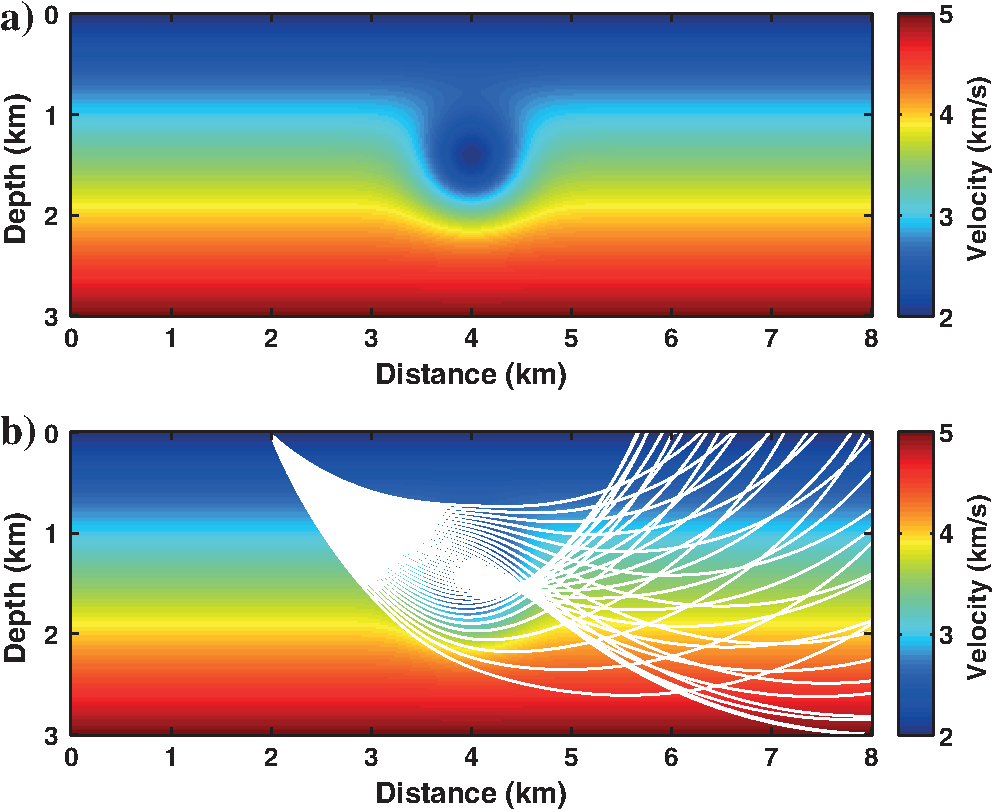
Seismic wave propagation through complex subsurface structures illustrating how diving waves interact with geological heterogeneities. From Sanford et al. (2023).
The FWI approach
In our approach we do not use any linearization of the forward modeling — such as the linear Born approach — which is considered in migration approaches. (Virieux et al. 2017)
When we reconstruct our model by beginning with an initial model and revising it iteratively, nonlinearity is implicitly introduced by repeated exact forward modeling at each update stage.
Diving waves and subsurface illumination
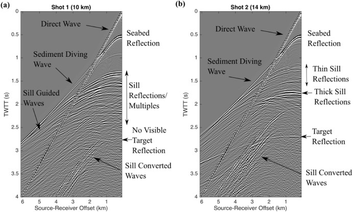
Seismic wave propagation around subsurface igneous sill complexes, showing diving wave paths and their interaction with complex geological structures. From Sanford et al. (2023).
The misfit function
The FWI problem is defined as minimizing the least-squares misfit:
\[ \min_{\mathbf{m}} \mathcal{C}(\mathbf{m}) = \frac{1}{2} \int_0^{T_w} \int_{\partial\Omega_s} \int_{\partial\Omega_r} \left| \mathbf{d}_\text{syn}^\mathbf{m}(\mathbf{x}_r, \mathbf{x}_s, t) - \mathbf{d}_\text{obs}(\mathbf{x}_r, \mathbf{x}_s, t) \right|^2 \, \mathrm{d}x_r \, \mathrm{d}x_s \, \mathrm{d}t \tag{1}\]
where \(\mathbf{d}_\text{syn}^\mathbf{m}\) is the synthetic data computed in model \(\mathbf{m}\), \(\mathbf{d}_\text{obs}\) is the observed data, \(T_w\) is the recording time, \(\partial\Omega_s\) and \(\partial\Omega_r\) are the source and receiver domains. (Virieux et al. 2017, eq. 3)
Iterative model update
This problem is solved through local nonlinear optimization. An iterative sequence \(\mathbf{m}_k(\mathbf{x})\) is built from an initial guess \(\mathbf{m}_\text{ini}(\mathbf{x})\):
\[ \mathbf{m}_{k+1} = \mathbf{m}_k + \alpha_k \Delta\mathbf{m}_k \tag{2}\]
where \(\alpha_k \in \mathbb{R}\) is computed through a linesearch or trust-region procedure. (Virieux et al. 2017, eq. 4)
Newton equation
For the Newton method, \(\alpha_k = 1\) and \(\Delta\mathbf{m}_k\) is the solution of:
\[ \mathcal{H}(\mathbf{m}_k) \Delta\mathbf{m}_k = -\nabla\mathcal{C}(\mathbf{m}_k) \tag{3}\]
where \(\mathcal{H}(\mathbf{m}_k)\) is the Hessian matrix and \(\nabla\mathcal{C}(\mathbf{m})\) is the gradient vector. (Virieux et al. 2017, eq. 5)
Gradient and Hessian
The FWI method can be expressed in terms of the Jacobian operator \(\mathcal{J}(\mathbf{m}) = \partial\mathbf{d}_\text{syn}/\partial\mathbf{m}\):
\[ \nabla\mathcal{C}(\mathbf{m}) = \mathcal{J}^T(\mathbf{m})(\mathbf{d}_\text{syn}(\mathbf{m}) - \mathbf{d}_\text{obs}) \]
\[ \mathcal{H}(\mathbf{m}) = \mathcal{J}^T(\mathbf{m})\mathcal{J}(\mathbf{m}) + \frac{\partial\mathcal{J}}{\partial\mathbf{m}}(\mathbf{d}_\text{syn}(\mathbf{m}) - \mathbf{d}_\text{obs}) \tag{4}\]
(Virieux et al. 2017, eq. 6)
Gauss-Newton approximation
Dropping the second term of the Hessian gives:
\[ \mathcal{H}_\text{GN}(\mathbf{m}) = \mathcal{J}^T(\mathbf{m})\mathcal{J}(\mathbf{m}) \tag{5}\]
The model update at iteration \(k\) becomes the least-squares solution:
\[ \mathcal{J}(\mathbf{m}_k) \Delta\mathbf{m}_k = -(\mathbf{d}_\text{syn}(\mathbf{m}_k) - \mathbf{d}_\text{obs}) \tag{6}\]
(Virieux et al. 2017, eqs. 7–9)
Quasi-Newton: L-BFGS
- A limited-memory variant of the quasi-Newton BFGS method
- Allows computing \(\mathcal{H}^{(n)} \nabla C^{(n)}\) without explicitly forming \(\mathcal{H}^{(n)}\)
- Only 3–20 gradients from previous iterations need to be stored
- Negligible storage compared to conjugate gradient (Nocedal 1980)
Convergence comparison
| Method | Convergence | Cost per iteration |
|---|---|---|
| Gradient descent | Slow (linear) | 1 forward + 1 adjoint |
| Conjugate gradient | Better | 1 forward + 1 adjoint |
| L-BFGS | Good | 1 forward + 1 adjoint |
| Gauss-Newton | Fast (quadratic) | Multiple solves |
| Newton | Fastest (quadratic) | Most expensive |
The forward problem
Wave equation in the time domain:
\[ \mathbf{M}(\mathbf{x}) \frac{\mathrm{d}^2\mathbf{u}(\mathbf{x},t)}{\mathrm{d}t^2} = \mathbf{A}(\mathbf{x})\mathbf{u}(\mathbf{x},t) + \mathbf{s}(\mathbf{x},t) \]
where \(\mathbf{M}\) and \(\mathbf{A}\) are the mass and stiffness matrices, \(\mathbf{s}\) is the source term, and \(\mathbf{u}\) is the seismic wavefield. (Virieux and Operto 2009, eq. 1)
Wave equation in the frequency domain:
\[ \mathbf{B}(\mathbf{x},\omega)\mathbf{u}(\mathbf{x},\omega) = \mathbf{s}(\mathbf{x},\omega) \tag{7}\]
where \(\mathbf{B}\) is the impedance matrix — a sparse complex-valued matrix. (Virieux and Operto 2009, eq. 2)
The wavefield as a nonlinear operator
The relationship between the seismic wavefield and the parameters is nonlinear and can be written compactly as:
\[ \mathbf{u} = \mathbf{G}(\mathbf{m}) \tag{8}\]
(Virieux and Operto 2009, eq. 3)
The data-misfit vector \(\Delta\mathbf{d} = \mathbf{d}_\text{obs} - \mathbf{d}_\text{cal}(\mathbf{m})\) with \(\mathbf{d}_\text{cal}(\mathbf{m})=\mathcal{R}\mathbf{u}\) of dimension \(N\) captures the differences at receiver positions for each source-receiver pair. The misfit function is:
\[ \mathcal{C}(\mathbf{m}) = \frac{1}{2} \Delta\mathbf{d}^\dagger \Delta\mathbf{d} \tag{9}\]
where \(\dagger\) denotes the adjoint operator (transpose conjugate). (Virieux and Operto 2009, eq. 4)
Gradient of the misfit function
Adjoint-state gradient:
The gradient can be computed without explicitly building the sensitivity matrix, using the adjoint-state method:
\[ \frac{\partial\mathcal{C}}{\partial\mathbf{m}}(\mathbf{x}) = \sum_s \int_0^{T_w} dt \, \boldsymbol{\lambda}^T(\mathbf{x},t) \frac{\partial\mathbf{M}}{\partial\mathbf{m}}(\mathbf{x}) \partial_t \mathbf{w}(\mathbf{x},t) \]
(Virieux et al. 2017, eq. 28)
The gradient is formed by the zero-lag crosscorrelation between the adjoint wavefield \(\boldsymbol{\lambda}\) and the time derivative of the incident wavefield \(\mathbf{w}\), multiplied by a local scattering operator.
Sensitivity kernel and Fresnel zones
The sensitivity kernel
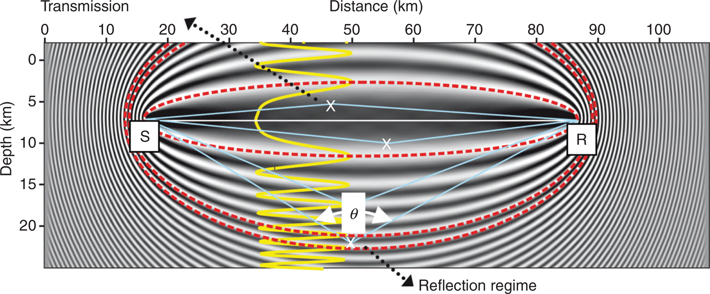
Misfit function gradient showing the first Fresnel zone between a source and receiver in a homogeneous background. The central ellipse represents the first Fresnel zone. The outer fringes represent migration isochrones whose width decreases with depth according to the scattering angle.The dashed red lines delineate the first Fresnel zone and an isochrone surface. From Virieux et al. (2017).
What are Fresnel zones?
The first Fresnel zone is the region where the phase time does not differ by more than half a period with respect to the direct arrival.
- Waves in the first Fresnel zone, primarily sampled by direct waves, provide a potential contribution for updating the medium with an expected smooth resolution (Woodward 1992)
- Outer interference fringes, mainly sampled by reflected waves, yield a zone with an expected high resolution
- Width of Fresnel zone is inversely proportional to the temporal frequency
Resolution from diffraction tomography
The scattering wavenumber vector \(\mathbf{k}\) linking the experimental setup to spatial resolution:
\[ \mathbf{k} = \frac{2f}{c_0} \cos\left(\frac{\theta}{2}\right) \mathbf{n} = \frac{4\pi}{\lambda} \cos\left(\frac{\theta}{2}\right) \mathbf{n} \tag{10}\]
where \(f\) is frequency, \(c_0\) is velocity, \(\theta\) is the diffraction/aperture angle, \(\lambda\) is wavelength, and \(\mathbf{n}\) is the unit vector. (Virieux et al. 2017, eq. 29; Virieux and Operto 2009, eq. 30)
Resolution from diffraction tomography
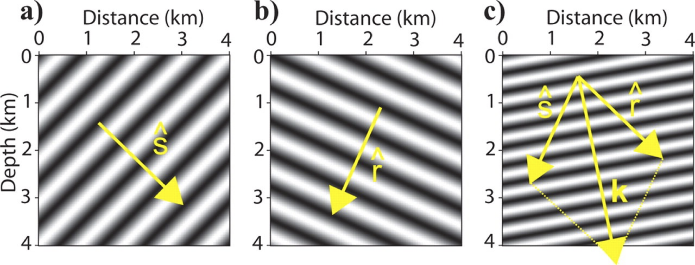
- Low frequencies and large appertures resolve intermediate and large wavelengths
- Normal incidence (\(\theta=0\)) leads to max resolution of \(\frac{1}{2}\lambda\)
- Long offsets resolve small horizontal wavenumbers of dipping structures
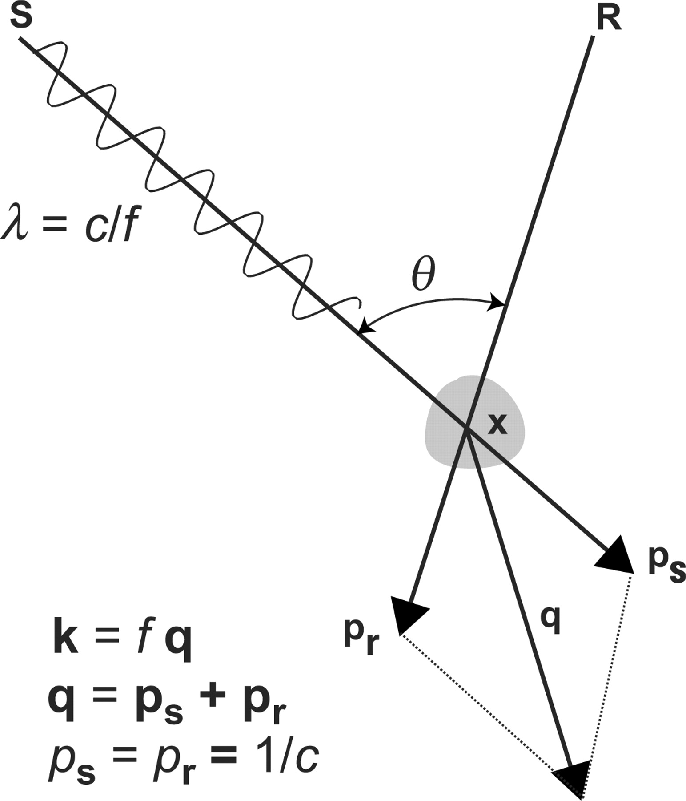
Attainable resolution
Frequency-domain sensitivity kernel:
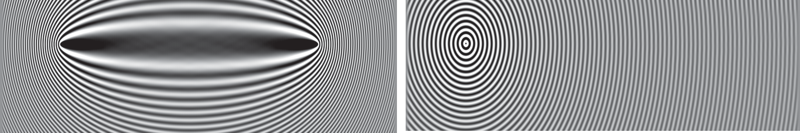
Wavepath. (a) Wavepath for a receiver located at a horizontal distance of 70 km. The frequency is 5 Hz and the velocity in the homogeneous background is 6 km/s. (b) Monochromatic Green’s function for a point source. From Virieux and Operto (2009).
Note
Key insights:
- One frequency and one aperture map one wavenumber in the model space. Frequency and aperture have redundant control of the wavenumber coverage.
- The central zone of elliptical shape is the first Fresnel zone of width \(\sqrt{\lambda O_{sr}}\), where \(O_{sr}\) is the source-receiver offset.
- Residuals matching the first arrival with an error lower than half a period update large wavelengths.
- Outer fringes are isochrones associated with later-arriving reflections, providing updates of the shorter wavelengths.
Valhall OBC field example: resolution improvement
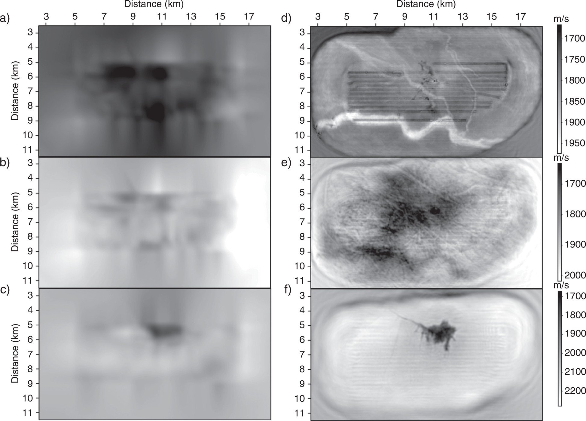
Initial model (left) and final FWI model (right) for the Valhall field. Horizontal sections at 175 m, 500 m, and 1000 m depth. Note the significant increase in resolution from left to right — paleochannels, glacier imprints, and gas cloud contours become visible. From Virieux et al. (2017).
Valhall: seismogram comparison
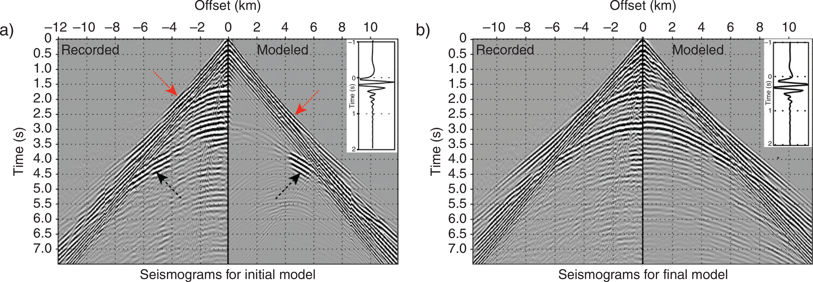
Common receiver gather in (a) the initial model and (b) the final model. Red arrows identify first-arrival phases, and black arrows identify post-critical phases. Note the increasing extraction of information achieved by FWI. The source signal is shown as an insert and differs between the initial and final models. From Virieux et al. (2017).
OBC data set from the North Sea
Initial model in the left panels and final model in the right panels. Horizontal sections are shown at depths of 175 m, 500 m, and 1000 m. Note the significant increase of resolution from left to right. The paleoriver features are nicely visible in (d) but cannot be seen in (a), at a depth of 175 m. In (d), one can identify also the strong imprint of the acquisition. At a depth of 500 m, imprints on bedrock of former glaciers are focused in (e) but are not visible in (b). Finally, at a depth of 1000 m, very precise contours of the gas cloud are clear in (f) but are completely blurred in (c). Acquisition imprints decrease with depth but are still present. From Virieux et al. (2017)
Regularization
FWI is an ill-posed problem — an infinite number of models can match the data. The misfit function can be augmented:
\[ \mathcal{C}(\mathbf{m}) = \frac{1}{2} \Delta\mathbf{d}^\dagger \mathbf{W}_d \Delta\mathbf{d} + \frac{1}{2} \varepsilon (\mathbf{m} - \mathbf{m}_\text{prior})^\dagger \mathbf{W}_m (\mathbf{m} - \mathbf{m}_\text{prior}) \tag{11}\]
where:
- \(\mathbf{W}_d = \mathbf{S}_d^* \mathbf{S}_d\) — data weighting (inverse of data covariance)
- \(\mathbf{W}_m = \mathbf{S}_m^* \mathbf{S}_m\) — model weighting (inverse of model covariance)
- \(\mathbf{S}_m\) is a roughness operator (e.g., first- or second-difference matrices)
- \(\varepsilon\) controls the trade-off between data fit and model smoothness
(Virieux and Operto 2009, eq. 17)
Cycle skipping: the fundamental challenge
The problem:
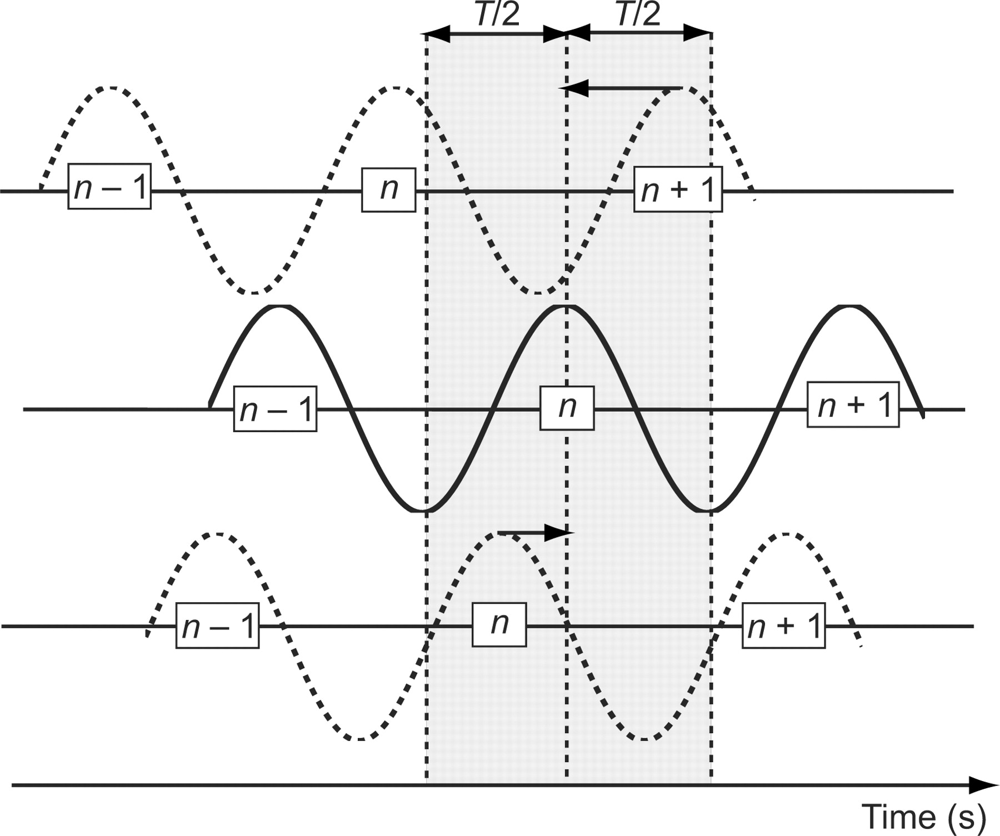
The Born approximation requires that the starting model allows matching observed traveltimes with an error less than half the period (Beydoun and Tarantola 1988):
\[ \frac{\Delta t}{T_L} < \frac{1}{N_A} \]
where \(T_L\) is the simulation duration and \(N_A\) is the number of propagated wavelengths.
For 50 wavelengths, the traveltime error must be less than 1%!
Cycle skipping examples (cont.)
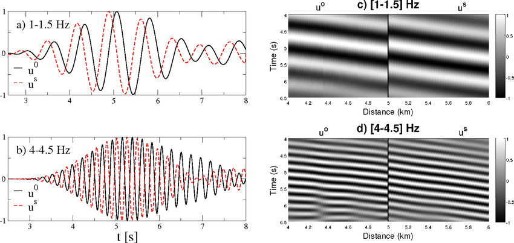
Comparative study of objective functions to overcome noise and bandwidth limitations in FWI. From Tejero et al. (2015).
Cycle skipping examples
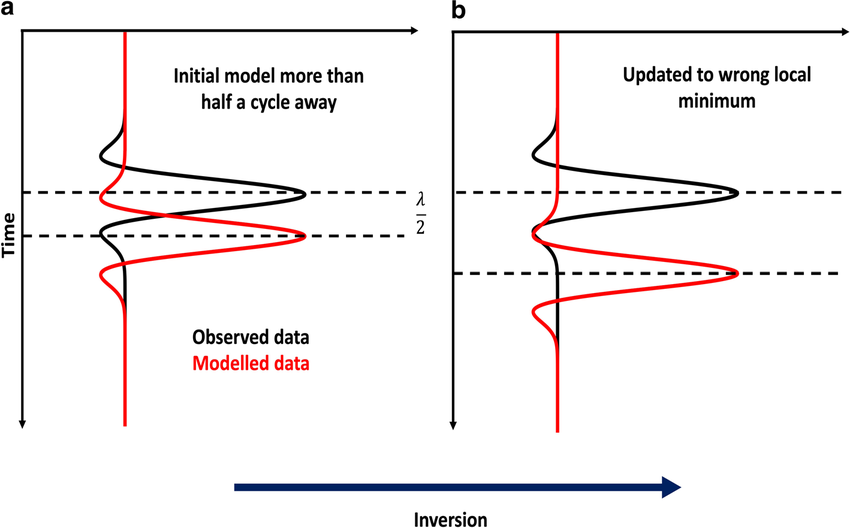
Characterising ice slabs in firn using seismic full waveform inversion. From Pearce et al. (2023).
Cycle skipping examples (cont.)
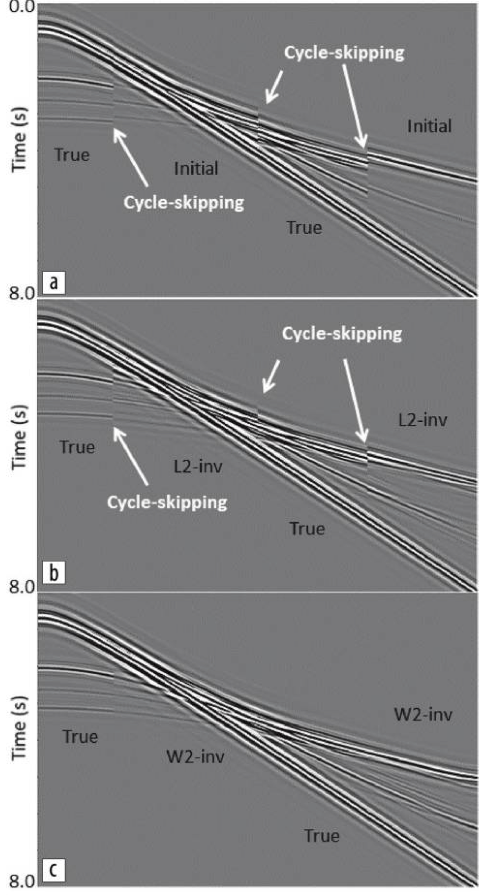
Long-wavelength FWI updates in the presence of cycle skipping. From Ramos-Martínez et al. (2019).
Cycle skipping examples (cont.)
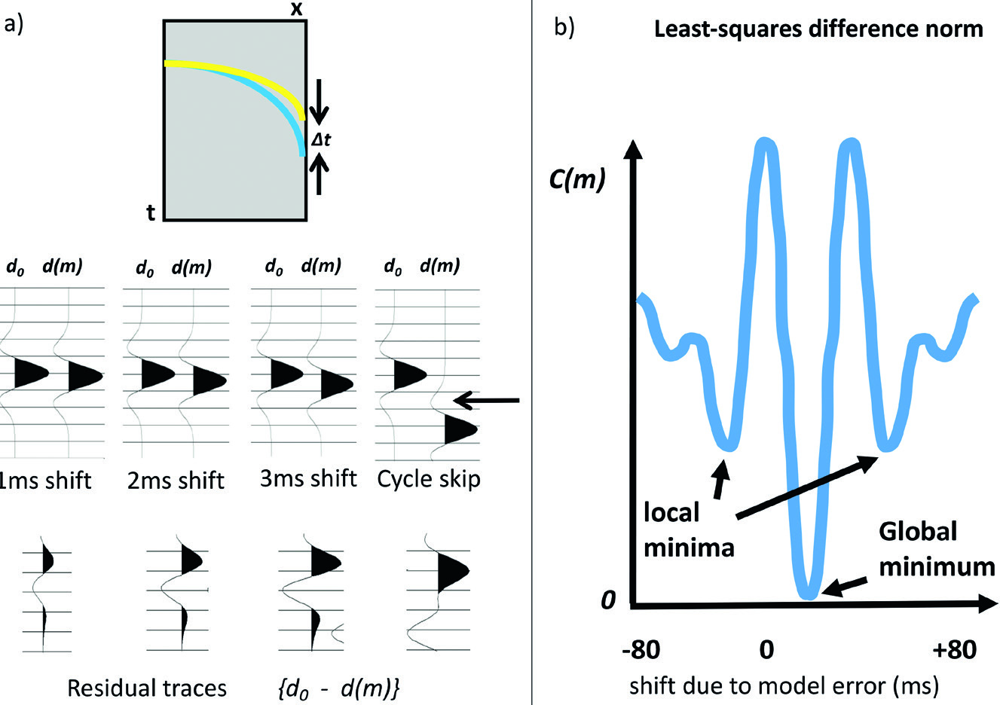
(a) Time shift \(\Delta t\) between field data (yellow) and modelled data (blue). Centre: far-offset traces for various model errors. Bottom: residual traces. (b) Cost function for various time shifts — note the local minima on either side of the global minimum. From Jones (2019).
Effects of Cycle-skipping - true model
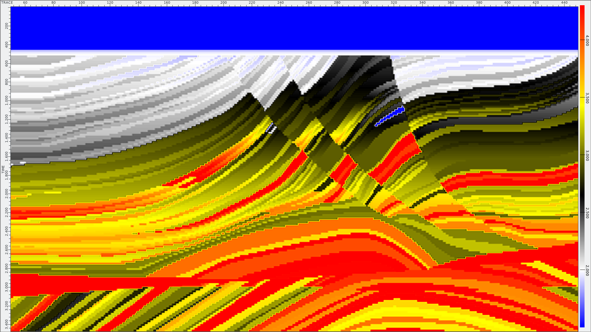
Effects of Cycle-skipping – > 3Hz
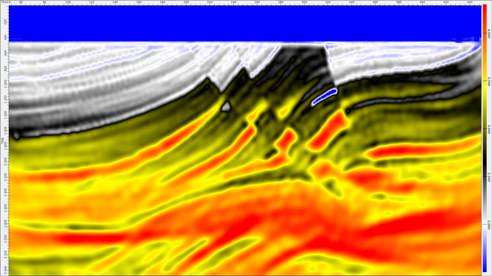
Effects of Cycle-skipping – > 6Hz
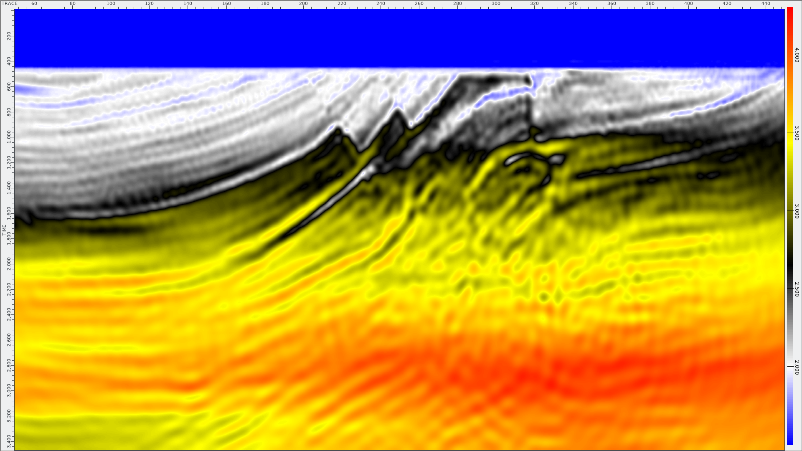
Sensitivity to starting models
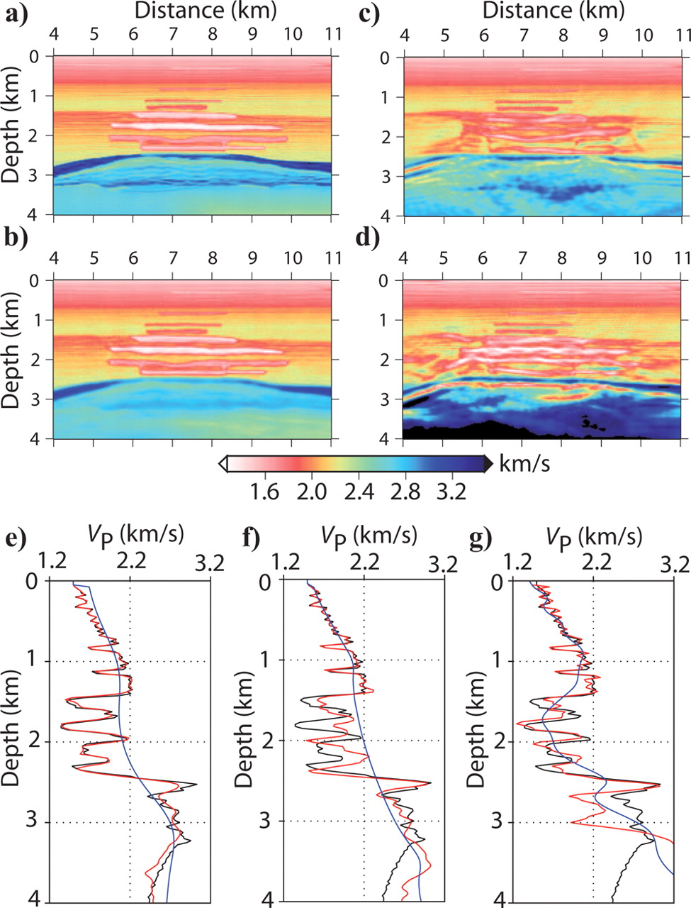
Sensitivity of FWI to the accuracy of different starting models for the synthetic Valhall model. (a) Close-up of the true model. (b–d) FWI models from different starting models. (e–g) Velocity profiles comparing true (black), starting (blue), and FWI models (red). From Virieux and Operto (2009).
Multiscale strategies
Frequency continuation: The hierarchical multiscale strategy successively processes data subsets of increasing resolution power to incorporate progressively smaller wavenumbers in the tomographic models. (Virieux and Operto 2009)
- Time domain: Bunks et al. (1995) propose successive inversion of subdata sets of increasing high-frequency content
- Frequency domain: Invert single or multiple frequencies (frequency groups) of increasing frequency
Laplace-Fourier approach: Using complex-valued frequencies equivalent to exponential damping of seismograms:
\[ P\left(\omega + \frac{i}{\tau}\right) e^{i\omega t} = \int_{-\infty}^{+\infty} p(t) e^{-(t-t_0)/\tau} e^{i\omega t} \, dt \tag{12}\]
The Laplace-domain inversion provides a smooth velocity model as a starting model for subsequent Fourier-domain FWI. (Shin and Cha 2009; Virieux and Operto 2009)
Multiscale FWI example
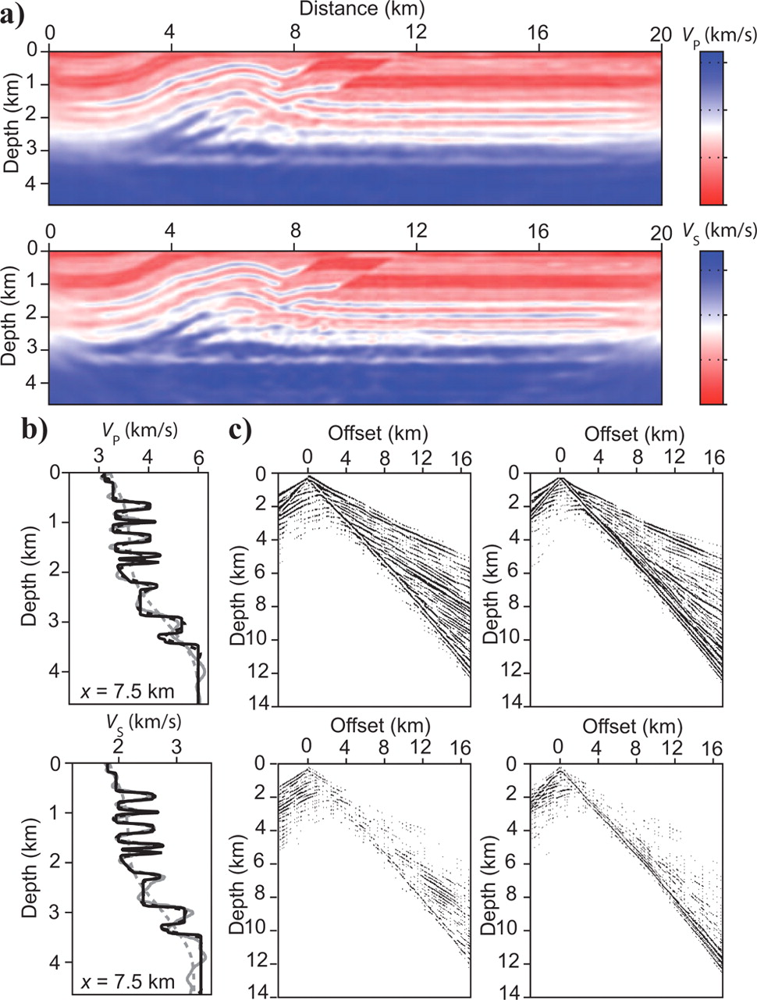
Multiscale strategy for elastic FWI applied to the overthrust model. (a) FWI velocity models \(V_P\) (top) and \(V_S\) (bottom). (b) Well-log comparison. (c) Synthetic seismograms showing final residuals. From Virieux and Operto (2009).
Laplace-Fourier-domain FWI
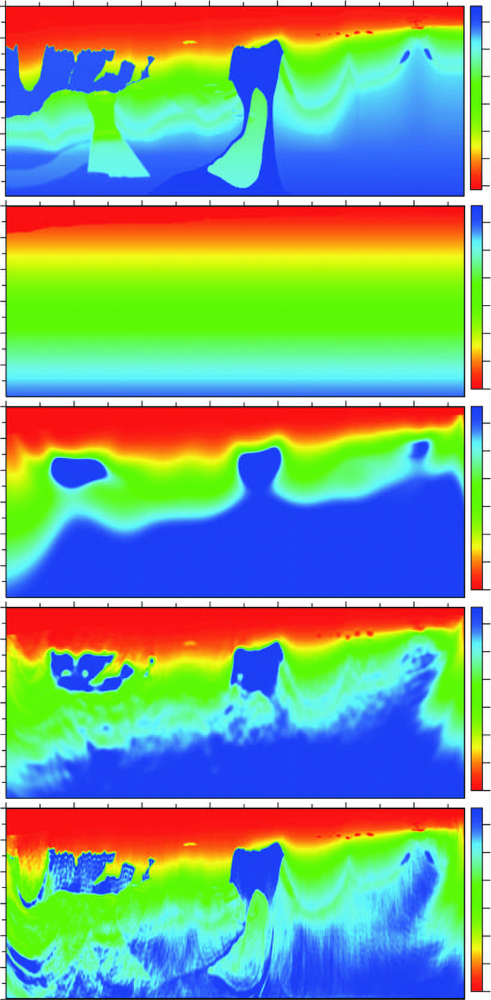
Laplace-Fourier-domain waveform inversion for the BP benchmark model. (a) True model. (b) Starting model. (c) After Laplace-domain inversion. (d) After Laplace-Fourier-domain inversion. (e) After frequency-domain FWI. All structures are successfully imaged from a very crude starting model. From Virieux and Operto (2009).
Next steps
While multiscale techniques mitigate some of the effects of cycle skipping they to not overcome the problem.
So, far we mainly looked at transmitted diving waves whose depth of penetration depends on
- maximum offset
- lowest temporal frequency (determines width of the Fresnel zone)
In the next lectures, we will exploit
- topology of gradient to fascilitate reflection and multi-parameter FWI
- model space extensions
- constraints
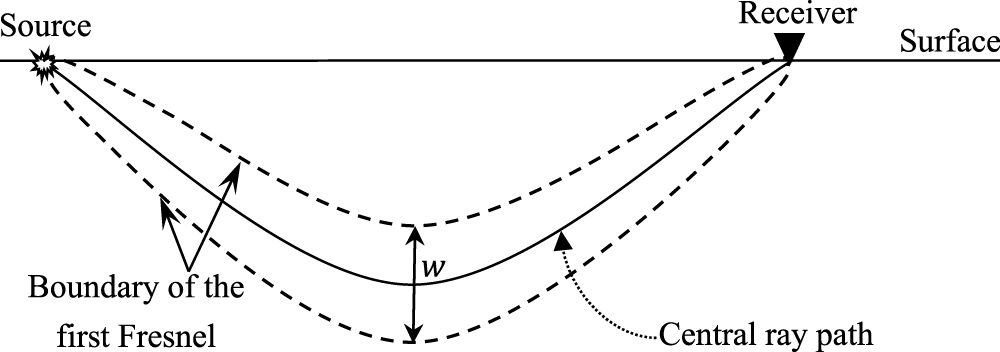
Topology of the FWI gradient
Banana-doughnut kernels vs. rabbit ears:
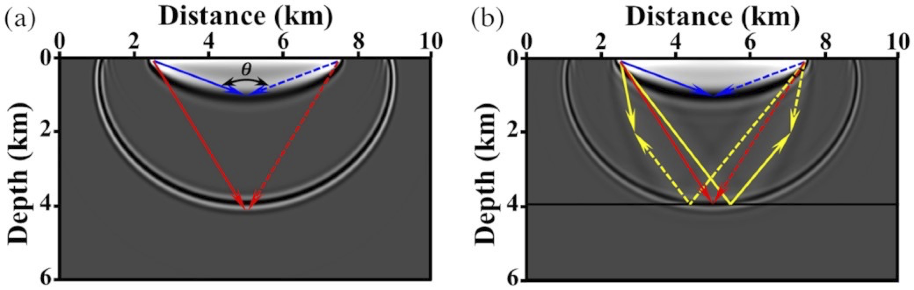
The sensitivity kernels of acoustic FWI for one source-receiver pair: (a) without and (b) with a prior reflector. The banana-shaped kernel (blue) represents diving-wave contributions; the rabbit-ears-shaped kernel (yellow) represents reflected-wave contributions. \(\theta\) is the aperture angle. From Kim et al. (2022).
Three components of the gradient
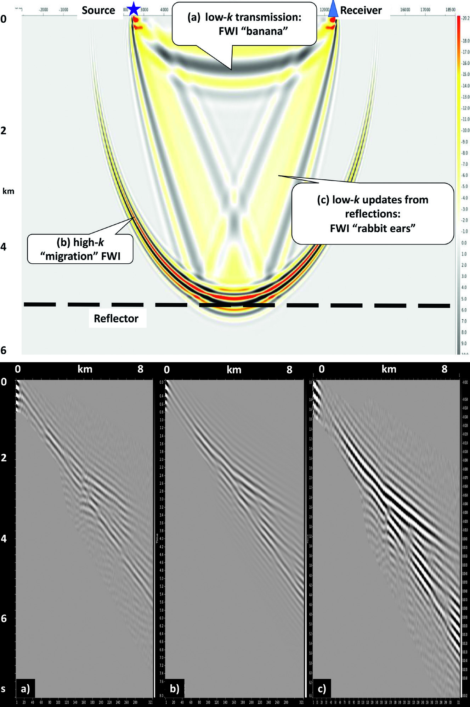
The overall gradient response is comprised of three constituent parts: (a) the direct arrival “banana” refraction path (low-\(k\) transmission), (b) the usual migration-response-like elliptical arc (high-\(k\) “migration” FWI), and (c) the “cross-talk” rabbit ears (low-\(k\) updates from reflections). Courtesy of Chao Wang, ION. From Jones (2019).
Building the gradient: single wavelet
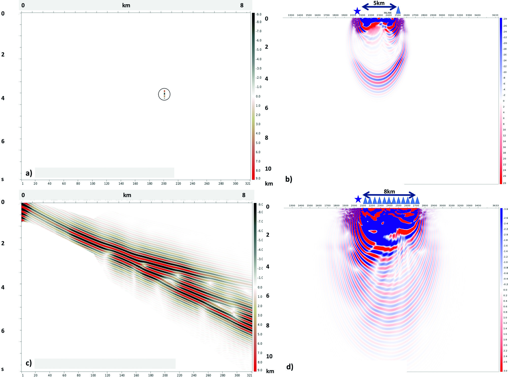
- Subjecting a single residual wavelet to the FWI procedure produces banana-shaped and rabbit-ear-shaped gradient contributions
- These closely resemble migration impulse responses
- Working independently with these separated gradient components can facilitate faster and more reliable model update
Summing gradient contributions
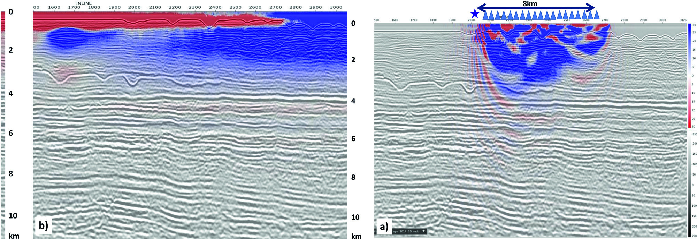
(a) PreSDM image with single shot gradient contribution superimposed. (b) After summing gradient contributions for all shots — blue indicates where to increase velocity, red where to decrease. From Jones (2019).
Discussion: practical aspects
Key takeaways from industrial implementation (Jones 2019):
- For early iterations, concentrate on the lowest available frequencies — the cost function is less oscillatory and cycle skipping is less likely
- For deep sub-salt model update, frequencies below about 2 Hz are needed
- Using the acoustic approximation, we ignore density changes and modelled reflection amplitudes will be in error
- For early stages, rely on diving-wave energy (transmitted/refracted wavefield) — penetrates to ~\(\frac{1}{3}\) of maximum source-receiver offset
Two-stage approach:
- Refracted wavefield: update shallow sediment model using long offsets, low frequencies, and turning wave data
- Reflected wavefield: use the rabbit-ear cross-talk terms to penetrate deeper into the model
FWI in practice with Devito
Tutorials 01–03: From forward modelling to FWI
The following slides illustrate a hands-on implementation of FWI using Devito, a domain-specific language for finite-difference computations. Based on tutorials from the SLIM Group.

Seismic survey setup.
Three key steps:
- Tutorial 01 — Forward modelling: solve the acoustic wave equation
- Tutorial 02 — Reverse-Time Migration: adjoint wavefield and imaging condition
- Tutorial 03 — Full-Waveform Inversion: gradient computation and iterative update
Tutorial 01: Forward modelling
The acoustic wave equation
\[ \begin{cases} m \dfrac{d^2 u(\mathbf{x},t)}{dt^2} - \nabla^2 u(\mathbf{x},t) + \eta \dfrac{d u(\mathbf{x},t)}{dt} = q & \text{in } \Omega \\[6pt] u(\cdot,0) = 0, \quad \dfrac{du}{dt}\big|_{t=0} = 0 \end{cases} \]
where:
- \(m = 1/c^2\) is the square slowness
- \(\eta\) is the damping mask (absorbing boundary layer)
- \(q\) is the source term (Ricker wavelet): \(q(t) = \left(1 - 2\pi^2 f_0^2 \left(t - \frac{1}{f_0}\right)^2\right) e^{-\pi^2 f_0^2 \left(t - 1/f_0\right)^2}\)
Tutorial 01: Model and geometry
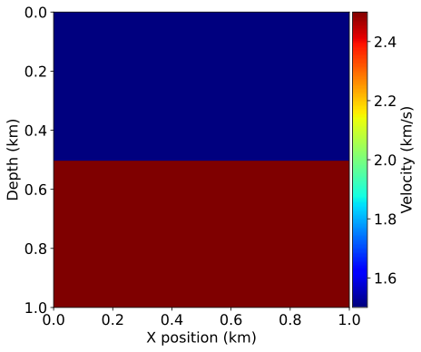
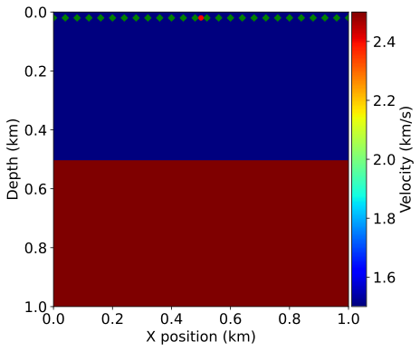
Tutorial 01: Devito implementation
Setting up the wave equation in Devito
from devito import TimeFunction, Eq, solve, Operator
# Define wavefield and PDE
u = TimeFunction(name="u", grid=model.grid,
time_order=2, space_order=2)
pde = model.m * u.dt2 - u.laplace + model.damp * u.dt
# Create time-marching stencil: solve for u(t+dt)
stencil = Eq(u.forward, solve(pde, u.forward))
# Source injection and receiver interpolation
src_term = src.inject(field=u.forward,
expr=src * dt**2 / model.m)
rec_term = rec.interpolate(expr=u.forward)
# Create and run operator
op = Operator([stencil] + src_term + rec_term,
subs=model.spacing_map)
op(time=time_range.num-1, dt=model.critical_dt)Tutorial 01: Shot record
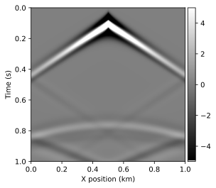
Synthetic shot record from the two-layer model. The direct arrival and reflection from the interface are clearly visible.
Tutorial 02: Reverse-Time Migration
From forward model to linear system
The forward simulation can be written as:
\[ \mathbf{A}(\mathbf{m}) \, \mathbf{u} = \mathbf{q} \]
The adjoint (back-propagation) solves:
\[ \mathbf{A}(\mathbf{m})^T \, \mathbf{v} = \delta\mathbf{d} \]
where \(\delta\mathbf{d} = \mathbf{P}_r \mathbf{u} - \mathbf{d}_\text{obs}\) is the data residual.
. . .
Imaging condition
\[ \text{Image} = \sum_{t=1}^{n_t} \mathbf{u}[t] \, \mathbf{v}[t] \]
The forward and adjoint wavefields meet at reflector positions at zero time offset.
Tutorial 02: True vs. smooth model
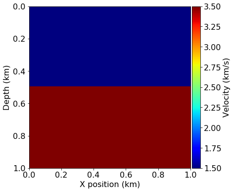
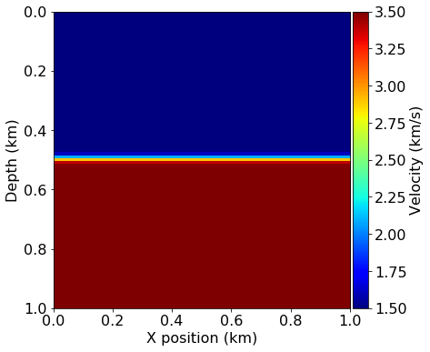
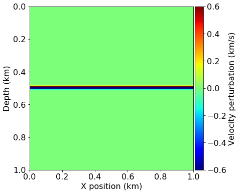
Tutorial 02: RTM imaging operator
def ImagingOperator(model, image):
v = TimeFunction(name='v', grid=model.grid,
time_order=2, space_order=4)
u = TimeFunction(name='u', grid=model.grid,
time_order=2, space_order=4,
save=geometry.nt)
# Adjoint wave equation (note negated damping)
eqn = model.m * v.dt2 - v.laplace + model.damp * v.dt.T
stencil = Eq(v.backward, solve(eqn, v.backward))
# Inject data residual at receiver locations
res_term = residual.inject(field=v.backward,
expr=residual * dt**2 / model.m)
# Imaging condition: correlate u and v
image_update = Eq(image, image - u * v)
return Operator([stencil] + res_term + [image_update],
subs=model.spacing_map)Tutorial 02: RTM result
Imaging loop
for i in range(nshots):
# Forward model with true velocity
true_d, _, _ = solver.forward(vp=model.vp)
# Forward model with smooth velocity
smooth_d, u0, _ = solver.forward(
vp=model0.vp, save=True)
# Back-propagate residual
residual = smooth_d.data - true_d.data
op_imaging(u=u0, v=v, vp=model0.vp,
residual=residual)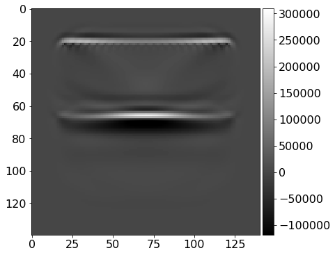
Tutorial 03: Full-Waveform Inversion
FWI objective function
\[ \min_{\mathbf{m}} \; \Phi_s(\mathbf{m}) = \frac{1}{2} \left\lVert \mathbf{P}_r \mathbf{u} - \mathbf{d} \right\rVert_2^2, \quad \text{s.t.} \quad \mathbf{u} = \mathbf{A}(\mathbf{m})^{-1} \mathbf{P}_s^T \mathbf{q}_s \]
Gradient via adjoint-state method
\[ \nabla \Phi_s(\mathbf{m}) = \sum_{t=1}^{n_t} \mathbf{u}[t] \, \mathbf{v}_{tt}[t] = \mathbf{J}^T \delta\mathbf{d}_s \]
where \(\mathbf{v}_{tt}\) is the second-order time derivative of the adjoint wavefield:
\[ \mathbf{A}^T(\mathbf{m}) \, \mathbf{v} = \mathbf{P}_r^T \, \delta\mathbf{d} \]
Note
The FWI gradient is the RTM imaging condition with an extra \(\partial_{tt}\) applied to the adjoint field.
Tutorial 03: FWI setup
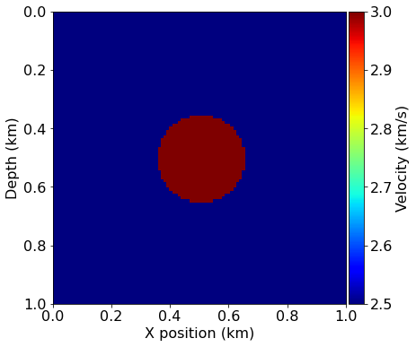
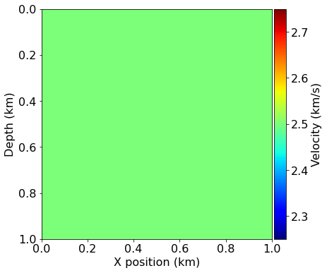
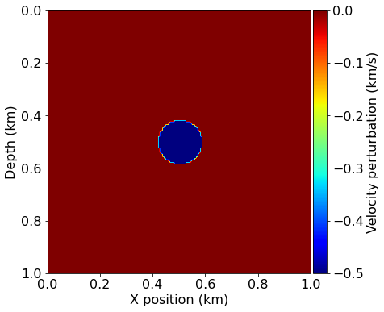
Transmission geometry: sources on one side, receivers on the other — records mostly diving waves, which are essential for FWI convergence.
Tutorial 03: Gradient computation
def fwi_gradient(vp_in):
grad = Function(name="grad", grid=model.grid)
objective = 0.
for i in range(nshots):
geometry.src_positions[0, :] = source_locations[i, :]
# Forward model with true velocity → observed data
_, _, _ = solver.forward(vp=model.vp, rec=d_obs)
# Forward model with current estimate → save wavefield
_, u0, _ = solver.forward(vp=vp_in, save=True, rec=d_syn)
# Compute residual and accumulate objective
compute_residual(residual, d_obs, d_syn)
objective += .5 * norm(residual)**2
# Back-propagate residual → gradient
solver.gradient(rec=residual, u=u0, vp=vp_in, grad=grad)
return objective, gradTutorial 03: FWI iteration loop
for i in range(fwi_iterations):
# Compute functional value and gradient
phi, direction = fwi_gradient(model0.vp)
# Step length (in practice: linesearch)
alpha = .05 / mmax(direction)
# Update model with box constraints
update_with_box(model0.vp, alpha, direction)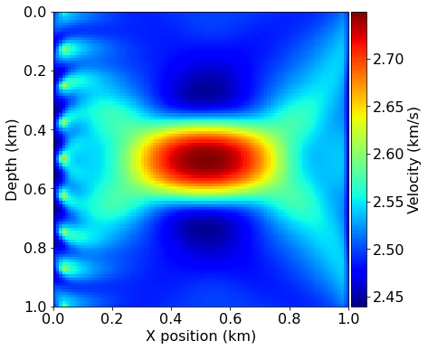
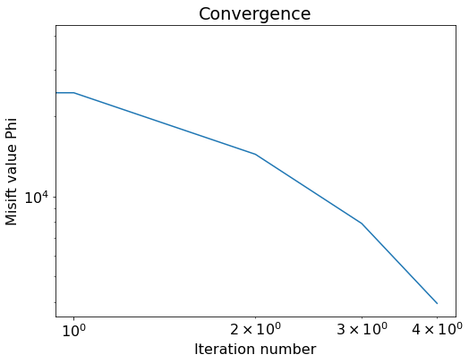
Tutorial 03: Gradient vs. perturbation
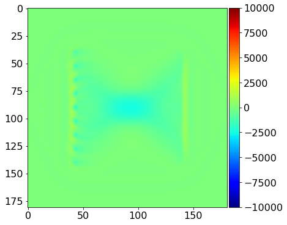
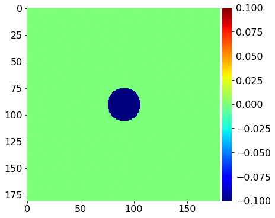
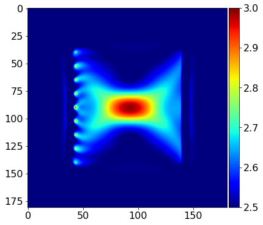
Important
The gradient has the same sign as the true perturbation — confirming that gradient descent moves the model in the correct direction.
SLIM contributions to FWI
Stochastic optimization and computational efficiency:
Effective method for parameter estimation with PDE constraints (Haber, Chung, and Herrmann 2012)
- Reformulate multi-source problems as stochastic programming
- Combine multiple right-hand sides into fewer simultaneous sources
- Reduces linear cost scaling to a tractable framework
Seismic waveform inversion by stochastic optimization (Leeuwen, Aravkin, and Herrmann 2011)
- Stochastic optimization for seismic waveform inversion
- Sub-sampling of sources reduces per-iteration cost
- Convergence guarantees under stochastic gradient framework
SLIM contributions (cont.)
Robustness and scalability:
Robust inversion, dimensionality reduction, and randomized sampling (Herrmann, Erlangga, and Lin 2012)
- Uses Student’s t-distribution instead of least-squares
- Handles 50% corrupted data successfully
- Dimensionality reduction via data averaging and sampling
3D frequency-domain seismic inversion with controlled sloppiness (Leeuwen and Herrmann 2014)
- Adaptive scheme using small subsets of sources and inexact PDE solves
- Significant computational gains while maintaining accuracy
- Makes 3D FWI computationally tractable
Common theme
All four works address the computational bottleneck of FWI by leveraging ideas from stochastic optimization, randomized linear algebra, and dimensionality reduction.
Summary
Key takeaways:
- FWI uses the entire wavefield to reconstruct subsurface parameters at sub-wavelength resolution
- The single scattering formulation treats all phases equally — no prior scale separation
- The gradient is formed by crosscorrelation of forward and adjoint wavefields
- Cycle skipping is the fundamental challenge — mitigated by multiscale strategies
- The gradient has three components: banana (transmission), migration arc (reflection), and rabbit ears (cross-talk)
- Optimization methods range from gradient descent to quasi-Newton (L-BFGS)
- Regularization and starting model design are critical for convergence
- Stochastic methods from SLIM make large-scale 3D FWI tractable